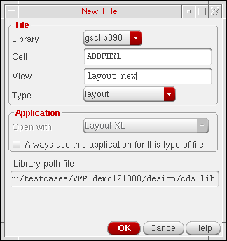

Starting Layout XL with an Existing Physical Configuration View
To start Layout XL from a schematic view in the context of an existing configuration view:
-
From the CIW, choose File – Open.
The Open File form is displayed. -
Specify the Library and Cell names, choose schematic from the View list and click OK.
The Virtuoso Schematic Editor L Editing window appears displaying the cellview you specified. -
From the schematic window, choose Launch – Layout XL.
Layout XL appears on the Launch menu only if the Layout XL software is installed. If you do not see Layout XL in the menu, check with your system administrator.
The Startup Option form is displayed. - In the Layout group box, choose whether you want to create a new layout cellview or open an existing one.
-
In the Configuration group box, select Open Existing.
-
Click OK.
One of the following happens:-
If you chose to create a new layout cellview, the New File form is displayed.
Choose a Library name and type the Cell and View names. -
If you chose to open an existing layout view, the Open File form is displayed again.
Specify the Library and Cell names and choose the View you want to open.You cannot change setting for the Open with option in the Application group box, regardless of the value set for the maskLayoutDefaultAppenvironment variable.
-
If you chose to create a new layout cellview, the New File form is displayed.
-
Click OK to create the new layout cellview or to open an existing one.
The Open Physical Configuration View form is displayed.

- Specify the Library Name, Cell Name, and View Name.
- Select the Open CPH check box to open the Configure Physical Hierarchy window automatically.
-
Click OK.
The default Layout XL desktop configuration appears: the schematic window, the layout window, the CIW, and the Palette assistant.
The schematic view is re-opened in the context of the specified physical configuration view, which might be different from the configuration it was using previously. The schematic window banner updates to indicate the name of the specified physical configuration view and the Configure Physical Hierarchy window opens.
You might need to re-extract the schematic view in order to take into account the settings in the physical configuration view. The system will inform you if this extraction is required.
Related Topics
Return to top